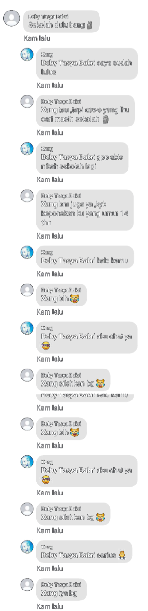

Aku bingung harus mulai dari mana untuk menyampaikan apa yang ingin aku sampaikan.
Tiba tiba aku punya ide untuk membuat website ini untuk meluapkan apa yang aku rasakan.
Sebelum mealnjutkan bagiku ini akan menjadi menyedihkan, tapi aku gak tau setelah membaca ini apa yang kamu rasakan .
Semua berawal dari postingan aku di grup we are Wibu or Anime lover
niat nya ya untuk caper karena akunku sepi.
Nyari cewe wibu umur 10-16 yang siap nikah sama aku aku 19 tauh..
Kalo gakmau nikah beneran nikah online juga gpp
Kalo ada chat ya..
Postingan ku lumayan mendapatkan banyak komentar, tapi kebanyakan cuma komentar yang meledek :D
Diantara banyaknya komentar , punya kamu adalah yang paling mencuri perhatian aku.
Ada beberapa perempuan yang aku chat entah kenapa cuma kamu yang mau balas.
percakapan pun terus berlanjut sampai aku mempertanyakan sesuatu.
percakapan di lanjut kan di WA karena sepertinya kamu lebih aktif di WA.
Awalnya lumayan lancar tapi setelah beberapa hari tidak tau kenapa sepertinya aku kehilangan kemampuan untuk mencari topik percakapan yang menarik,
kadang beberapa chat dari kamu cuma bisa aku READ, bikan karena tidak mau membalas tapi aku gak tau harus membalas apa.
bahkan aku sampai bertanya di beberapa grup gimana caranya memulai sebuah percakapan yang seru, tapi sangat sulit.
Jadi aku rasa banyak laki laki yang lebih berpengalaman dan cocok sama kamu, mungkin pas kita pacaran kamu punya pacar selain aku sih jadi gak usah nyari lagi :D .
Terimakasih sedah jadi pacar aku walaupun cuma beberapa hari, mungkin berteman jauh lebih baik. :D